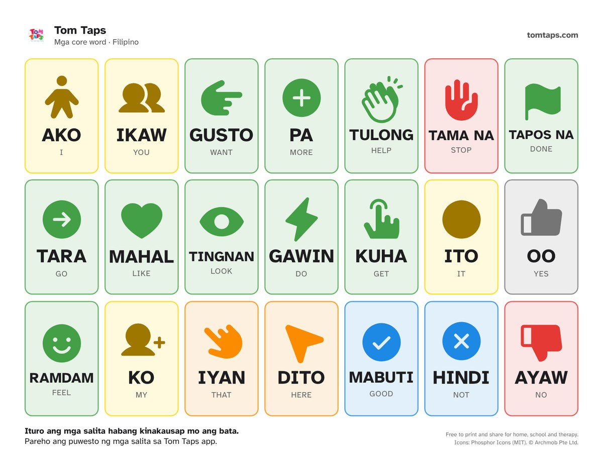

21 core words in Filipino, English and Spanish. Free to print and share for home, school and therapy.
One page, short bond (Letter), landscape. On A4, choose "Fit to page" when printing.

The words sit in the same rows and columns as the core words in the Tom Taps app, with the same colors. What your child learns on paper works on the iPad, and the other way around.
Colors follow the Fitzgerald Key that speech therapists use: yellow for people, green for actions, blue for describing words, orange for places and pointing words, red for stop and no.
Libreng core board na puwedeng i-print. I-print sa short bond, ilagay sa plastic, at ituro ang mga salita habang kinakausap ninyo ang bata. Pareho ang puwesto ng mga salita sa Tom Taps app.
Icons from Phosphor Icons, MIT license. Font: Atkinson Hyperlegible.